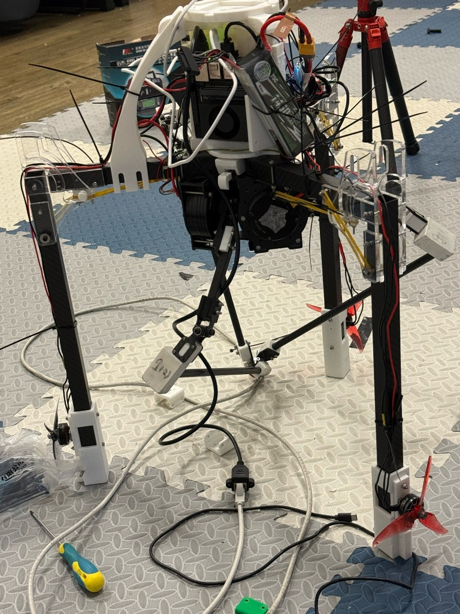
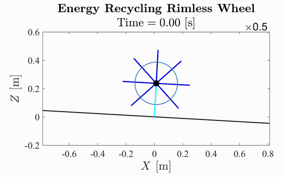

My research focuses on embodied intelligence for robot locomotion. I am interested in how robots move in complex environments (e.g., rubble, leaf litter, and sand).
I work on dynamic modeling and model-based control, and I also study learning-based control to improve performance with data and experience.

Propeller-Assisted 3D Hopper: Hierarchical Force Allocation
Research Assistant @ CUHK, Jul 2025 – Jun 1, 2026
Developed an SRB-based Hierarchical Force Allocation (HFA) stack for a 3-RSR parallel-leg hopper, prioritizing leg contact forces and using tri-rotor thrust as residual authority. Built the real-time LCM control middleware and inverse-kinematics pipeline, enabling continuous 3D hopping and outdoor disturbance recovery.
* First-authored paper accepted by IEEE CASE 2026. arXiv

Reinforcement Learning for Parallel-Mechanism Hopping
Research Assistant @ CUHK & Technion, Nov 2025 – Present
Training PPO hopping policies for a 3-RSR parallel-leg robot in Isaac Gym and MuJoCo MJX, comparing serial-leg and native closed-chain simulation for sim-to-real transfer. Built encoder-decoder policies for flight-phase underactuation, scaled GPU training across thousands of parallel environments, and validated against a model-based QP controller on real-robot logs with domain randomization and actuator-delay modeling.

Multimodal Hopping Mobile Manipulation Platform
Research Assistant @ CUHK & Technion, 2025 – Present
Extending the 3-RSR propeller-assisted hopper toward a multimodal mobile-manipulation platform by integrating radar/camera targeting, end-effector operation, and intermittent-contact locomotion. The system connects dynamic hopping mobility with onboard perception and manipulation under a unified hardware and control stack.

Energy-Recycling Bipedal Walking Robot
Undergraduate Research Project, 2024
Details to be added upon publication.
Learning & Practice Projects
-
Hopper_sim_modelbase
Model-based simulation and control framework for a hopping robot.
-
Quadrotor_dynamics_sim
Dynamics modeling and simulation of a quadrotor UAV.
-
Spring_Dynamic_sim
Dynamic simulation of spring-mass systems and related mechanisms.
-
RL_cart
Reinforcement learning implementation for the classic cart-pole balancing problem.
-
Legged_Robot_Clutch-Spring
Simulation and design of a clutch-spring energy recycling mechanism for legged robots.